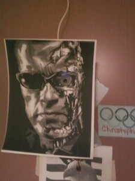
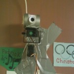
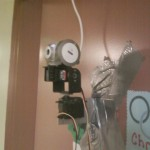
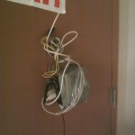
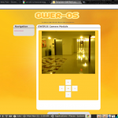

Door Mounted Robo Schwarzenegger
11/12/2010

I don't get to fool around with my own projects nearly as much as I would like, but this weekend I did devote a few hours to finishing up a robotic internet controlled camera on our apartment door. The pre-existing peep hole didn't exactly work, and I'm tired of people knocking and having no idea who is at the door, so I felt like this was an appropriate solution. The story of exactly how and why I made this thing can find their roots back in the summer. One day in August I had this idea of creating a Generic Web Enabled Robotic Operating System (GWEROS... yeah I know it's a pretty stupid sounding acronym, give me a break) that would essentially allow you to create an awesome, high functioning robot out of a wide variety of off the shelf hardware so long as it had a few basic things: a web server, a web cam, a serial port attached to a micro controller (arduino, pic, whatever) and some servos, motors, wheels or whatever. The aspiring robot enthusiast would cobble together whatever hardware he or she can manage, install GWEROS (make the install/update process simple like
wordpress) and be up and running in no time.
Basically I thought it could be like a less hardcore version of
ROS (which is totally badass) for use exclusively in the browser. I even think if done properly and given enough time to gather community support, people much smarter than myself could write plugins that would allow GWEROS users to do powerful things with their robots
from their web browser typically reserved high end or high price robots.
Needless to say it was a bit ambitious for a project for the middle of summer and while I wish I had the time to pour into making it a reality, I had more than enough on my plate at the Center for Astrophysics. Therefore I only started writing the interface and just finished writing some basic camera / telemetry code this weekend. The end result is what you see here:




The best part about it? Nobody even knows it's there because it is disguised as Arnold Schwarzenegger.